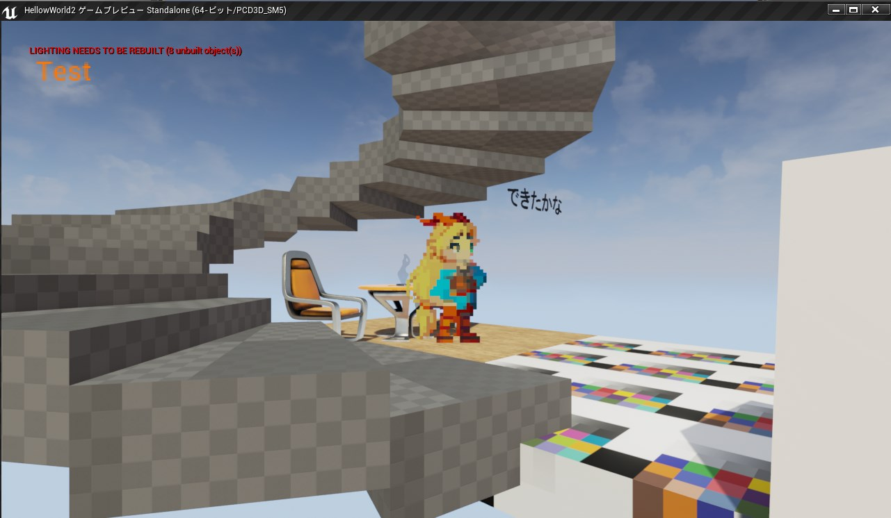
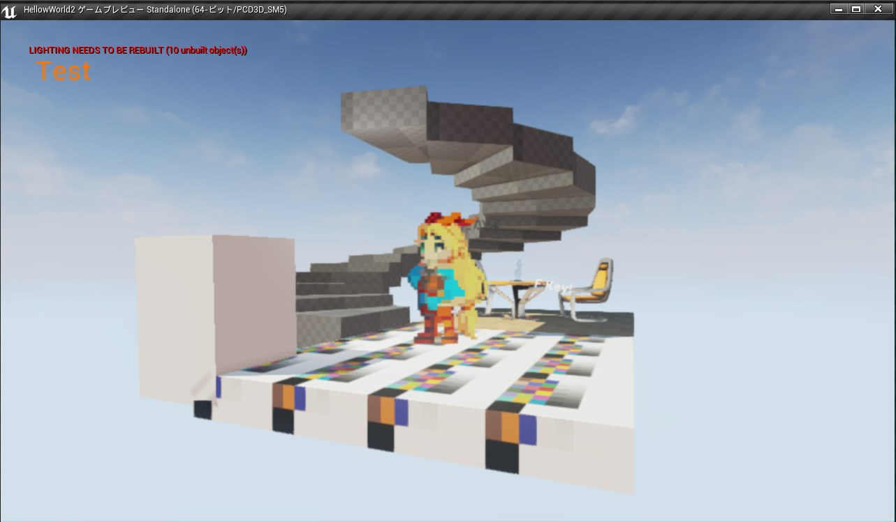
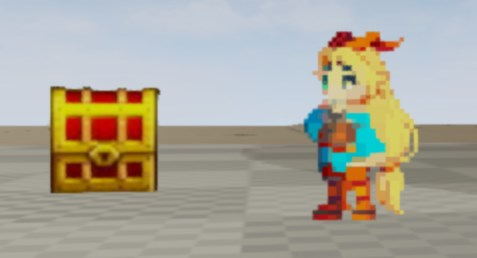
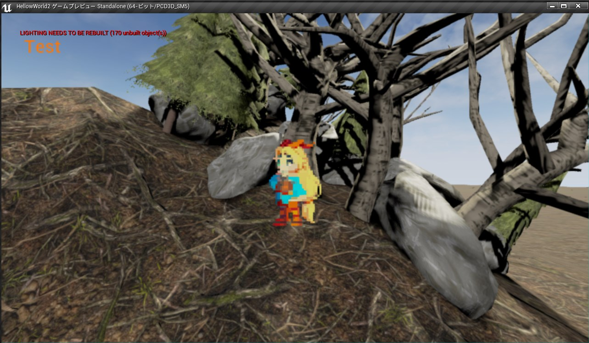
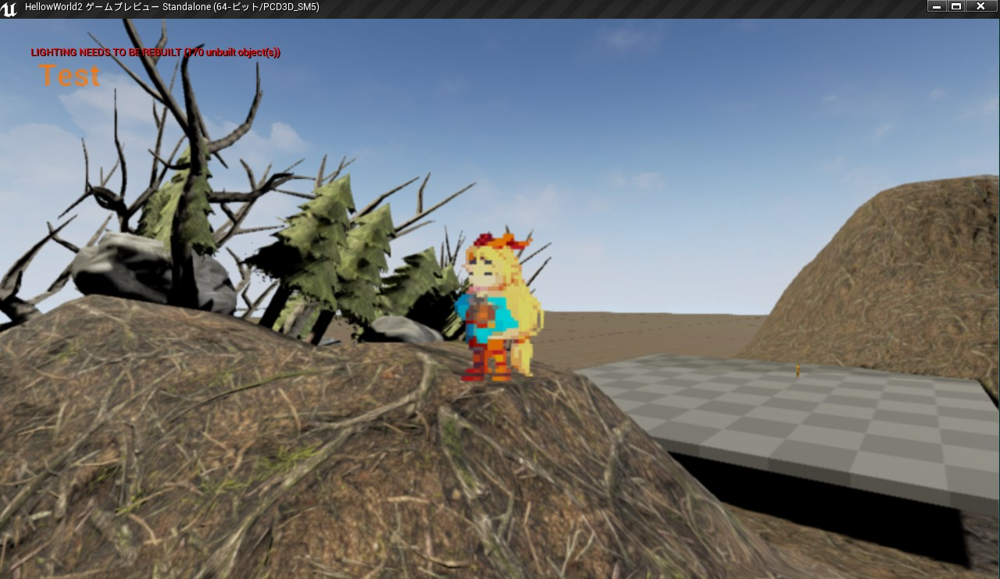

RPG作りたくて・・・１日目
ゲームのテスト版作った・・・ｗ
テスト版
テスト版でファイル容量が４２３MBあった・・・ｗ
てことで、GitHubにアップロードするには重いなっと、今回はアップロードを断念しました・・・
スクリーンショットは撮影しましたので、ご覧ください・・・ｗ
さあ、まずは殺風景な風景。何もないですよね？

正面です

屋上に到達すると宝箱がありますが、テスト版のHTML５だと色が変色して・・・ｗ

テスト版からはあることをしないと行けない場所

あまりの完成度にUnityちゃんもにっこり・・・ｗ

ところで、HTML5に出力するのに１８分かかった・・・ｗ
それでまあ、今回はUnrealUngine４を使って、初めて、ブループリントからほとんどドキュメントのない状態で手探りで作ったわけでして・・・ｗ
今日はイベントの制御を勉強したので、明日から本格的にRPGが作れるようになるはず・・・ｗ いや、本当はゲーム用に変数とか共有用のものとか準備するべきなんだろうけど、まだまだわからないことが多くて、どこまで自力で作っていいのやら・・・ｗ だいたいほとんどの機能がUE4にはあるなって感じで・・・ｗ シーンのパッケージ化もあるし、やることがだいたいないんだけど、まだまだドキュメントは不足気味かなって思う・・・ｗ